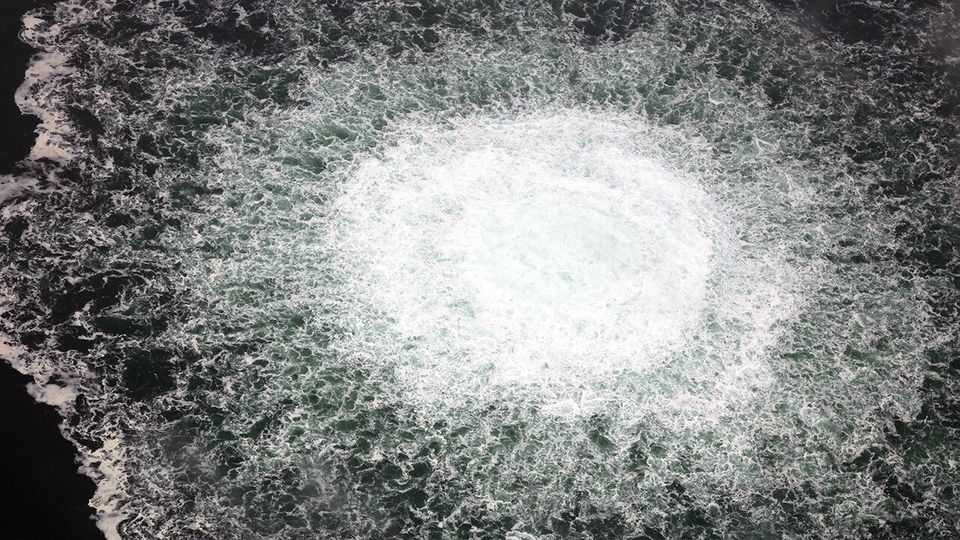
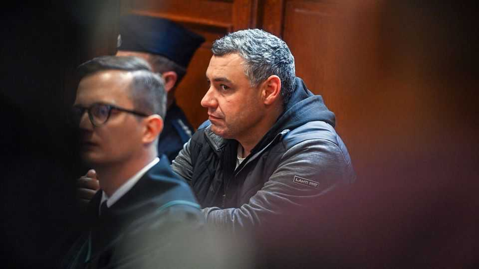

The wild, gripping story of the Nord Stream pipeline bombing
A technicolour account of the sabotage suggests how fast the world has changed
July 16th 2026

The bombs were hidden in divers’ cylinders and lowered into the Baltic Sea. In freezing darkness they were fixed to the pipes that snaked along the sea floor from Russia to Germany. The timers were set. As Bojan Pancevski shows in his new book, the resulting explosions shook Europe’s economy and the Western alliance. Revisited today, those tanks are also time capsules, messages in a bottle from an already remote past.
Known as Nord Stream 1 and 2, the twin tubes comprised the world’s longest undersea pipeline network when they were laid in 2011 and 2021 respectively. They were always controversial. By bypassing Ukraine, they made it easier for the Kremlin to cut off its gas supplies without interrupting deliveries farther west. As Mr Pancevski writes in “The Nord Stream Conspiracy”, they were “giant tentacles” which “tied Germany and much of Europe to Russia” through dependence on Russian energy.
The blasts that ruptured them in September 2022, seven months into Russia’s full-scale invasion of Ukraine, spewed up gas worth $2bn in giant geysers. The facts of the case have emerged patchily; Mr Pancevski, a correspondent for the Wall Street Journal, has dug out what he thinks is the full story.

It is gripping. In this telling, the improvised, shoestring raid was conducted by a maverick Ukrainian special-forces unit which, like much of the country’s war effort, relied partly on private funding. It was led by an officer nicknamed “the madman” who had plotted warlords’ assassinations. His team included a heavily tattooed politician and ex-cop who had trained to be a priest. Among the divers was a dauntless former erotic model, whose boyfriend was scared away from Kyiv lest he distract her. The aim was to cut Russia’s export revenues and its influence on Europe.
Equipped with fake IDs obtained from criminals in Bulgaria, a crew of seven rented a sloop on the German coast and sailed into the Baltic. To set the bombs they plunged 80 metres into the murk, sometimes in a vicious storm. This book isn’t misty-eyed about Ukraine’s fractious security services and snakepit politics, noting the corruption and occasional brutality that blight them. But it honours the saboteurs’ ingenuity and bravery.
The German police faced stonewalling and lies. Russia blamed America, which disliked Nord Stream, but, in this account, had got wind of the plan and tried to stop it. As Germany sent aid to Ukraine and took in refugees, the idea that the culprits might be Ukrainian was combustible. Still, the plods tracked down suspects using fingerprints, traffic cameras and facial-recognition software. A Ukrainian caught in Poland was sensationally released. Another was extradited from Italy and indicted on June 30th; German prosecutors explicitly—and explosively—say the attack was committed “on behalf of Ukrainian state authorities”.
So the saga isn’t over. But the Nord Stream era is. It is only four years since the pipeline was blown up, yet it seems a relic of a distant age. Now it appears bonkers that—after Vladimir Putin invaded Georgia and annexed Crimea—some Western statesmen thought it wise to strengthen his hold on Europe’s economy. His most terrible war has recast this episode and the preceding folly.
Conversely, other aspects of the tale seem less incredible than they did. In four years the notion that war is waged beyond the battlefield has become commonplace. Undersea cables are damaged; Russian hackers target Western institutions; and amateur arsonists, recruited on social media, firebombed a house owned by Britain’s prime minister. Hybrid warfare is no longer a shock but an insidious rumbling reality.
Conspiracism has likewise become more entrenched. The Nord Stream case features false-flag theories, subterfuge and cover-ups of a kind that seem unsurprising in the former Soviet world, where opacity has bred cynical mistrust. Paranoiacs in the West have long thought this way, too; as these worlds bleed together, ever more people do.
From another angle this book is a dispatch from a separate battle—between shoe-leather journalism and the forces, commercial and technological, which threaten it. For this is really a chronicle of three feats: the sabotage, the police inquiry and the author’s stupendous investigative reporting. On the record, every Ukrainian cited here denies bombing Nord Stream. Yet Mr Pancevski’s sources and perseverance let him reconstruct the mission in technicolour. No AI chatbot will ever match that. ■
For more on the latest books, films, TV shows, albums and controversies, sign up to Plot Twist, our weekly subscriber-only newsletter